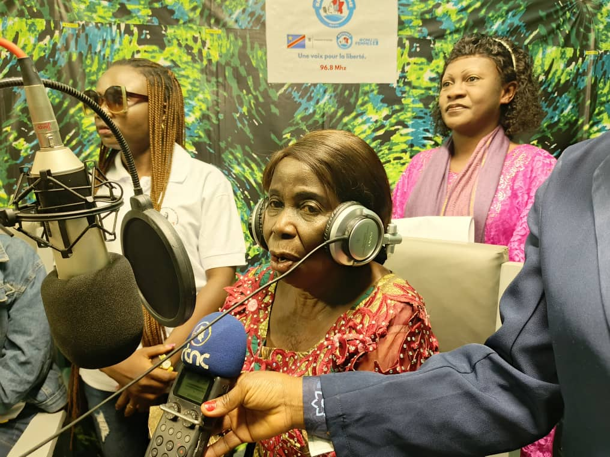
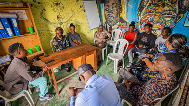
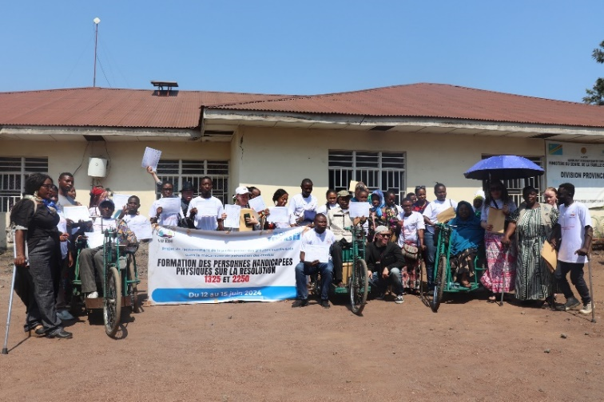

JANVIER 2022 — DÉCEMBRE 2024
Poser les fondations
Renforcer la coordination de la Résolution 1325, soutenir les mécanismes provinciaux et financer les initiatives de la société civile.
15 millions NOK
Enveloppe du programme · Rapport S5NORVÈGE · ONU FEMMES · PARTENAIRES EN RDC
Soutenir leur leadership. Faire entendre leurs voix. Renforcer leur participation à une paix durable en République démocratique du Congo.
Explorer les résultats Découvrir le partenariat
Échanger. Participer. Agir ensemble.
Dialogue intergénérationnel, Kinshasa, octobre 2025Un engagement commun
pour l’agenda Femmes, Paix et Sécurité
01 / UN PARTENARIAT DANS LA DURÉE
Le soutien de la Norvège permet à ONU Femmes d’accompagner les institutions et les organisations congolaises dans la mise en œuvre de l’agenda Femmes, Paix et Sécurité.
JANVIER 2022 — DÉCEMBRE 2024
Renforcer la coordination de la Résolution 1325, soutenir les mécanismes provinciaux et financer les initiatives de la société civile.
15 millions NOK
Enveloppe du programme · Rapport S5NOVEMBRE 2024 — DÉCEMBRE 2027
Appuyer le leadership des femmes, la localisation du PAN, les processus de paix et les institutions de sécurité et de justice.
22 millions NOK
Enveloppe du programme · Rapports S6 et S8Enveloppes annoncées dans les rapports, distinctes des dépenses réalisées. Les deux phases se chevauchent en novembre et décembre 2024.
Financement et engagement politique en faveur de la participation des femmes à la paix.
Expertise technique, coordination, appui aux partenaires et suivi des résultats.
Mise en œuvre institutionnelle et communautaire, mobilisation et dialogue local.
02 / LES RÉSULTATS DOCUMENTÉS
Chaque chiffre raconte une réalisation précise. Consultez sa source et son périmètre avant de l’utiliser.
Les effectifs concernent des activités et des périmètres différents. Ils ne doivent pas être additionnés pour calculer des bénéficiaires uniques. Les résultats de janvier–septembre 2026 proviennent du rapport S8. Les réalisations antérieures restent consultables par phase ; les audiences estimées et les participations cumulées ne sont pas des bénéficiaires uniques.
JANVIER–SEPTEMBRE 2026 · RAPPORT S8
Le rapport national de mise en œuvre de la Résolution 1325 a été soumis à l’Union africaine. Les mécanismes provinciaux sont renforcés et les données de suivi sont consolidées à l’échelle des 26 provinces.
Les trois incubateurs de paix du Nord-Kivu, de l’Ituri et du Tanganyika offrent des espaces de formation, de mentorat, d’accès au numérique et de dialogue. Les médiatrices de trois provinces renforcent leurs compétences en transformation des conflits.
Le rapport décrit une contribution à la stratégie genre de la réforme de la justice 2025–2029, une consultation sur la gouvernance inclusive des ressources naturelles et une mobilisation vers une future Alliance nationale des femmes pour la paix.
Le rapport souligne les contraintes d’accès, la réduction de l’espace civique, les ressources limitées et les obstacles à la participation des femmes aux négociations. Il décrit également des actions communautaires de prévention d’Ebola intégrées aux messages de paix.
Les prochaines étapes annoncées portent sur la pérennisation des incubateurs, les consultations provinciales, l’appui institutionnel et l’intégration du genre dans les mécanismes de justice transitionnelle. Ces perspectives ne sont pas présentées comme des réalisations acquises.
ONU Femmes a accompagné la Synergie des femmes pour la paix et la sécurité dans un processus de financement WPHF de 100 000 USD. Ce financement distinct ne s’ajoute pas aux accords norvégiens présentés ici et n’est pas assimilé à une dépense réalisée.
03 / L’ANCRAGE TERRITORIAL
En 2026, une priorité opérationnelle au Nord-Kivu et à l’Ituri, des actions au Tanganyika et un appui national, avec la participation de médiatrices du Sud-Kivu. Sélectionnez un territoire.
Limites : geoBoundaries / OpenStreetMap, ODbL · Localisation provinciale, sans position des bénéficiaires. Les limites n’impliquent aucune reconnaissance officielle.
04 / LES PARTENAIRES EN ACTION
Explorez les organisations et les institutions présentes dans les accords transmis. Une même structure peut porter plusieurs projets.
Le fichier source contient 22 accords. Les montants ci-dessous sont des valeurs contractuelles en USD ; ils ne mesurent ni les dépenses ni les versements effectifs.
La part norvégienne des accords cofinancés n’est pas ventilée dans le fichier. Leurs montants ne sont pas intégralement attribuables à la Norvège.
05 / LES VISAGES DE L’ACTION
Des initiatives issues des rapports du programme, racontées à travers leurs réalisations et les photographies du terrain.

TANGANYIKA · REFEMET
La Radio de la Femme diffuse des informations et des émissions sur les droits, le leadership et la paix. Dix journalistes et animateurs, dont huit femmes, ont été formés sur les résolutions 1325 et 2250.
Source : rapport S5, section REFEMET · Photo extraite du rapport ONU Femmes
NORD-KIVU · UJADP
En 2026, 5WA – Mbegu za Amani associe la bande dessinée Bella, les expositions immersives et les spectacles. Vingt contenus audiovisuels sont diffusés et environ 950 participations cumulées sont rapportées pour les projections.
Texte : rapport S8, approche 5WA · Photo d’archive : rapport S5, UJADP
NORD-KIVU · VIFEDE
Des supports en braille et des outils de communication adaptés permettent aux personnes handicapées de s’approprier les agendas Femmes et Jeunes, Paix et Sécurité.
Source : rapport S5, section VIFEDE · Photo extraite du rapport ONU Femmes06 / DOCUMENTATION & TRANSPARENCE
Les publications publiques complètent les rapports transmis. Les chiffres du portefeuille restent rattachés à leur document d’origine.
Dates. Le rapport S5 couvre 2022–2024 malgré une couverture mentionnant 2023. Le rapport S6 annonce une couverture jusqu’à mars 2026, tandis que son résumé s’arrête à décembre 2025. Les dates précises des activités sont conservées lorsqu’elles sont documentées.
Attribution. Un financement contractuel n’est pas une dépense. Les financements cofinancés sont identifiés et les NOK ne sont pas convertis en USD. Les chiffres des présentations ne remplacent pas les rapports détaillés.
Rapport 2026. S8 couvre janvier à septembre 2026. Le total de sensibilisation sanitaire au Nord-Kivu présente une ventilation non concordante ; il n’est pas repris comme indicateur. Le mois exact de validation de la stratégie genre de la justice reste à préciser dans la source. Les résultats provinciaux ne sont pas automatiquement attribués à un accord particulier.
Résultats. Les activités prévues, contractualisées et réalisées restent distinctes. Les populations potentiellement couvertes par une radio ne sont pas des audiences mesurées. Aucun total de bénéficiaires uniques n’est calculé.
Partenaires. Les variantes de noms ont été regroupées pour la navigation. Les codes d’accords permettent de retrouver chaque entrée source. La province est issue des titres de projets et des rapports ; « National » ne signifie pas une présence opérationnelle dans toutes les provinces.
Publication. Ce portefeuille documentaire est préparé à partir du corpus transmis. Les rapports complets, les coordonnées personnelles et les données individuelles de protection ne sont pas diffusés. Les photographies restent la propriété de leurs titulaires. Il ne constitue pas un site institutionnel officiel.
Cartographie. Fond provincial geoBoundaries COD ADM1, millésime 2017, sources OpenStreetMap / Wambacher, licence ODbL. Fichier repris du dépôt public de cartographie de Global Greenway Business. Télécharger le fond géographique.